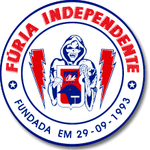
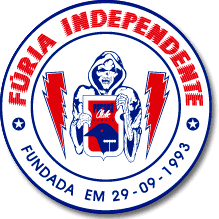
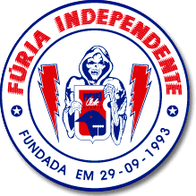

Paraná Clube é um clube de futebol brasileiro fundado em 19 de dezembro de 1989, resultado da fusão entre o Colorado Esporte Clube e o Esporte Clritiba, o clube rapidamente se destacou no cenário estadual e nacional, sendo conhecido como o "Tricolor da Vila" devido as suas cores e ao estádio Vila Capanema.

sua principal torcida organizada e a furia ndependente tricolor,conhecida por sua paixao e apoio incondicional ao clube,mesmo nos piores momentos.eles costumam marcar presença com faixas,bandeiras e cantos que animam as arquibancadas da vila capanema.
 
